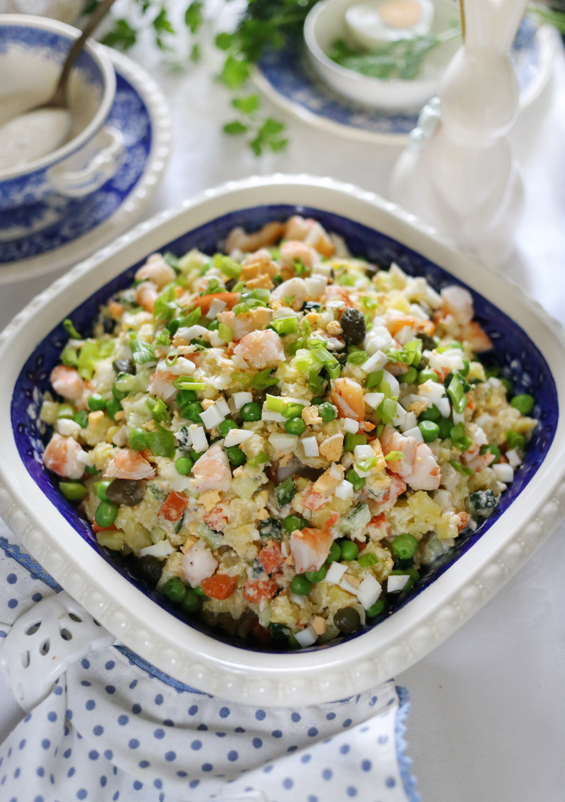

Вариация любимого салата в необычном прочтении. Мало того, что с креветками и яблоками, свежими огурцами и зеленым луком, но еще и с более легкой заправкой. Картошку и морковку, если вы не приготовили их заранее привычным способом, мы предлагаем отварить уже нарезанные кубиками всего за 15 минут.
Креветки для салата лучше брать неочищенные, свежие или свежемороженые — в них больше вкуса. Крупные креветки ножницами чуть надрезать вдоль спинки, с помощью зубочистки подцепить и вытянуть темную кишечную вену (пищевод).